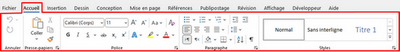
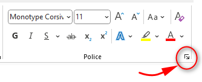

II) La mise en forme

1. La mise en forme de police
Exemples des formes d'un texte :
G(Gras) , I(Italique), S(Souligner) , taille de police, Couleur de police, Type de police, Indice, Exposant ...
Pour mettre un texte en forme :
✔ Sélectionner le texte à mettre en forme:
✔ Dans le groupe «Police» de l’onglet «Accueil», choisissez la (ou les) option(s) désirée(s)
Remarque :
Pour afficher les autres options, cliquer sur le Lanceur de boîte de dialogue (une flèche située à droite du groupe Police)

2. La mise en forme de paragraphe
Exemples des formes d'un texte :
Interligne, Espacement, Retrait, Trame de fond, Bordure, alignement, ...
Pour mettre un paragraphe en forme :
✔ Sélectionner le paragraphe à mettre en forme:
✔ Dans le groupe «Paragraphe» de l’onglet «Accueil», choisissez la (ou les) option(s) désirée(s)
Remarque :
Pour afficher les autres options, cliquer sur le Lanceur de boîte de dialogue (une flèche située à droite du groupe paragraphe)